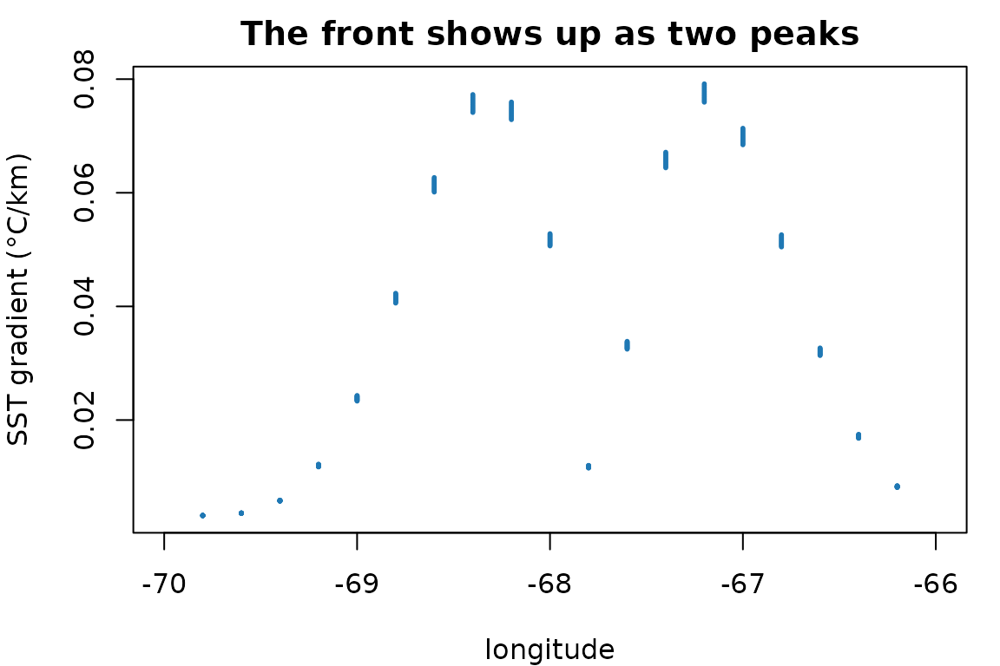

An ocean model gives you temperature, salinity, and currents. What concentrates plankton is usually not those values but how they are arranged and how they are changing: a front rather than a temperature, food accumulated since spring rather than food present today. This package computes that second kind of quantity.
Everything here is real output. The vignette builds a small synthetic field so the examples run without a Copernicus account, and every number and figure below was produced by the code shown.
The shape
Every function takes and returns the same thing: an sf
POINT object with one row per grid point and time step, a column per
covariate, and YEAR, MONTH, DAY
columns. That is what every datamatch access function
returns, whichever of its seven sources it read, so nothing below is
tied to a particular product.
env <- datamatch::accessCopernicus(
vars = c("SST", "SSS", "CHL"), years = 2010, months = 1:6,
bounding_box = list(xmin = -70, xmax = -66, ymin = 41, ymax = 44)
)Because input and output shapes are identical, the functions compose in a pipe and nothing has to be reassembled.
For this vignette we build the same shape by hand: a temperature field with a warm tongue that drifts west through the spring, on a small grid.
lon <- seq(-70, -66, by = 0.2)
lat <- seq(41, 44, by = 0.2)
frames <- lapply(1:6, function(month) {
grid <- expand.grid(x = lon, y = lat)
# A warm tongue centred at a longitude that moves west as the season goes on
centre <- -67.5 - 0.25 * month
grid$SST <- 8 + 6 * exp(-((grid$x - centre)^2) / 0.6) + 0.35 * (grid$y - 41)
grid$CHL <- 0.4 + 0.25 * month
# Fresher inshore, as a coastal current would leave it.
grid$SSS <- 31 + 0.9 * (grid$x + 70) / 4
grid$YEAR <- 2010
grid$MONTH <- month
grid$DAY <- 1L
grid
})
env <- sf::st_as_sf(do.call(rbind, frames), coords = c("x", "y"), crs = 4326)
dim(env)
#> [1] 2016 7Gradients
horizontal_gradient() gives the rate of change with
distance, which is what picks out fronts.
env <- horizontal_gradient(env, "SST")
round(range(env$SST_grad, na.rm = TRUE), 3)
#> [1] 0.003 0.079The units are covariate units per kilometre, not per
degree. That is the whole design. A degree of longitude is about 83 km
at 42°N and 111 km at the equator, so a per-degree gradient is stretched
by latitude and not comparable across a study area. Boundary cells are
NA, because a central difference needs a neighbour on both
sides.

Two peaks, because the tongue is warm in the middle: the gradient is steep on both flanks and flat at the crest. A gradient finds edges, not values.
Lags and accumulation
Populations respond with a delay, and a survey samples the food built up since the season began rather than the food present that instant.
env <- lag_covariate(env, "SST", n = 1, by = "month")
env <- integrate_covariate(env, "CHL", window = "year")
first_cell <- env[!duplicated(paste(env$MONTH)), ]
data.frame(
month = first_cell$MONTH,
CHL = round(first_cell$CHL, 2),
CHL_int = round(first_cell$CHL_int, 2)
)
#> month CHL CHL_int
#> 1 1 0.65 0.65
#> 2 2 0.90 1.55
#> 3 3 1.15 2.70
#> 4 4 1.40 4.10
#> 5 5 1.65 5.75
#> 6 6 1.90 7.65CHL_int is the running sum from January, which is what a
copepod integrates.
Note by = "month". Counting steps is only
unambiguous when the series is complete: in a monthly record missing
April, a one-step lag makes March the predecessor of May and says
nothing about it. Counting calendar months returns NA there
instead.
gappy <- env[env$MONTH != 4, ]
by_step <- lag_covariate(gappy, "SST", n = 1, by = "step")
by_month <- lag_covariate(gappy, "SST", n = 1, by = "month")
c(step = mean(is.na(by_step$SST_lag1)),
month = mean(is.na(by_month$SST_lag1month)))
#> step month
#> 0.2 0.4The calendar version has more NA because May genuinely
has no April to look back to. That is the honest answer.
A vector of lags builds an autoregressive set in one call:
env <- lag_covariate(env, "SST", n = 1:3, by = "year")
# adds SST_lag1year, SST_lag2year, SST_lag3yearrolling_covariate() describes the window instead of
accumulating it. The mean of the last three months and the variability
of the last three months are different covariates, and neither is their
sum.
env <- rolling_covariate(env, "SST", n = 3, by = "month",
stat = c("mean", "sd"))
round(c(mean = mean(env$SST_mean3month, na.rm = TRUE),
sd = mean(env$SST_sd3month, na.rm = TRUE)), 3)
#> mean sd
#> 10.482 0.663The window is trailing and inclusive, so March covers January to
March. Early steps have less history than the window asks for;
min_obs decides whether they get a summary of what is there
or an NA.
by = "month" counts calendar time and
by = "step" counts positions in the record. They agree
exactly until the series has a gap, and then diverge silently — which is
why the distinction is an argument rather than an assumption.
Distance to a front
The local gradient is a blunt predictor of frontal influence. A station in a smooth patch has zero gradient whether the nearest front is 2 km away or 200 km away, and those are very different places to be.
env <- distance_to_front(env, "SST", quantile = 0.9)
round(summary(env$SST_front_dist), 1)
#> Min. 1st Qu. Median Mean 3rd Qu. Max.
#> 0.0 27.4 49.3 62.2 96.7 202.5scope decides what “a front” means. The default takes
one threshold across the whole record, so a front means the same
physical sharpness every month and a quiet month may contain none. That
is a real result rather than something to suppress: a step with no front
returns NA, not 0, because reporting zero
would assert “you are standing on a front”.
Fronts also move, and a distance measured at one moment cannot tell a
permanent feature from a passing one. front_frequency()
asks how often a place is frontal.
env <- front_frequency(env, "SST", scope = "step")
round(summary(env$SST_front_freq), 2)
#> Min. 1st Qu. Median Mean 3rd Qu. Max. NAs
#> 0.00 0.00 0.17 0.10 0.17 0.33 420Here the warm tongue drifts west all season, so no cell is frontal for long and the frequencies stay low. On a real domain the shelf break stands out precisely because it does not move: a cell frontal in fifteen steps of twenty sits on something a predator can learn, and one frontal in one caught a filament going past.
Anomalies and extremes
Eight degrees is cold for the southern Gulf of Maine and warm for the
Scotian Shelf. A model given raw temperature has to learn that geography
before it can use the departure from it, and cell_anomaly()
hands the departure over directly.
env <- cell_anomaly(env, "SST", reference = "record")
round(range(env$SST_anom), 2)
#> [1] -2.94 3.18reference = "record" removes each cell’s whole-series
mean, which leaves the seasonal cycle in. "climatology"
removes a mean per calendar month instead, which is usually what you
want — but it needs several years, because with one year there is a
single January per cell and every anomaly comes out exactly
zero. That is a silent failure, so the function warns rather
than handing back a plausible-looking column of zeroes.
decompose_covariate() goes further and hands back the
parts themselves, so each can be used or inspected rather than only the
leftover. Six months is too short for a seasonal cycle, so ask for the
trend alone.
env <- decompose_covariate(env, "SST", components = c("trend", "slope"))
round(range(env$SST_slope), 2)
#> [1] -14.43 14.63That is the rate of change per year in each cell — here large, because the warm tongue is sweeping west across the domain over a single season, and every cell sees a steep local trend as it passes.
The trend and the seasonal cycle are fitted together rather than one after the other. Taken in sequence each absorbs part of the other: removing the trend first lets the seasonal cycle leak into it, because months are of unequal length and a twelve-month cycle is not orthogonal to a straight line in elapsed days. Fitted jointly, neither can steal from the other.
cell_anomaly(detrend = TRUE) uses the same fit to give
the departure once both the seasonal cycle and the long-term change are
gone.
marine_heatwave() needs the same history, for the same
reason: a threshold taken over three values is the largest of the three.
Twelve years of one month is enough to show it.
years <- 2000:2011
hw <- do.call(rbind, lapply(years, function(y) {
data.frame(x = -68, y = 43, YEAR = y, MONTH = 1L, DAY = 1L,
# An ordinary decade, then one very warm year.
SST = 9 + 0.4 * ((y * 7) %% 5) + if (y == 2011) 6 else 0)
}))
hw <- sf::st_as_sf(hw, coords = c("x", "y"), crs = 4326)
hw <- marine_heatwave(hw, "SST", min_steps = 1)
sf::st_drop_geometry(hw)[hw$mhw_event,
c("YEAR", "mhw_intensity", "mhw_category")]
#> YEAR mhw_intensity mhw_category
#> 12 2011 5.566667 4One event, in the year it was built into. Intensity is measured from the climatology rather than from the threshold, so it is comparable between cells whose thresholds differ, and the category counts how many multiples of the threshold’s own excess the value reached.
Density
Temperature is a poor stand-in for density wherever salinity varies, and the Gulf of Maine is such a place: Scotian Shelf inflow arrives cold and fresh, and the two pull density in opposite directions.
env <- potential_density(env)
round(range(env$sigma_theta), 2)
#> [1] 23.05 24.84That is sigma-theta, density minus 1000, from the UNESCO (1983) equation of state. Salinity given as a mass fraction rather than PSU sits inside the fitted range and would return a plausible freshwater density, so a column entirely below 1 PSU is called out separately.
Stratification and where eddies are made
accessCopernicus() takes a depth argument
and returns one level per call, so a second fetch at a deeper level
gives you the other half of a vertical difference. Here we stand one in
for a second fetch: colder, saltier, and slower than the surface, as
deeper water usually is.
env$SST_deep <- env$SST - 3
env$SSS_deep <- env$SSS + 0.6
env <- potential_density(env, "SST_deep", "SSS_deep", name = "rho_deep")
env <- potential_density(env, "SST", "SSS", name = "rho_surface")
env <- buoyancy_frequency(env, "rho_surface", "rho_deep",
depths = c(0.494, 92.326))
signif(range(env$N2), 3)
#> [1] 8.82e-05 1.11e-04N2 is the real stratification measure, where
vertical_gradient() only approximates it with a temperature
difference. The distinction matters here because Scotian Shelf inflow is
cold and fresh, and those pull density in opposite directions —
a temperature-only measure can miss stratification entirely.
Given velocities at both levels, the Eady growth rate says how fast baroclinic instability grows: where a sheared, weakly stratified flow can overturn and make eddies.
env$UO <- 0.25
env$VO <- 0.05
env$UO_deep <- 0.05
env$VO_deep <- 0.00
env <- eady_growth_rate(env, shallow = c("UO", "VO"),
deep = c("UO_deep", "VO_deep"),
depths = c(0.494, 92.326))
signif(range(env$eady_growth), 3)
#> [1] 0.554 0.636The units are per day, so these correspond to an e-folding in under two days — high, because the synthetic shear above is a strong one: 0.2 m/s across 92 m. Read the field comparatively rather than as a literal doubling time.
Eady is a person — Eric Eady, 1949 — not a spelling of “eddy”, which is an unlucky collision given that the rate predicts where eddies form. The 0.31 coefficient comes from Lindzen and Farrell (1980), not from Eady.
Where the column is not stably stratified the rate is NA
rather than enormous: dividing by a vanishing N would
otherwise manufacture intense instability exactly where the assumption
behind the formula has failed.
Flow structure
With velocities you can compute eddy kinetic energy and Lyapunov exponents. A small steady field is enough to show the machinery.
flow <- lapply(1:2, function(month) {
grid <- expand.grid(x = seq(-69, -68, by = 0.05),
y = seq(42, 43, by = 0.05))
# A westward current with a saddle on top: parcels are carried along, and
# also separate along one axis while converging on the other.
grid$UO <- -0.06 + 0.04 * (grid$x + 68.5)
grid$VO <- -0.04 * (grid$y - 42.5)
grid$YEAR <- 2010; grid$MONTH <- month; grid$DAY <- 1L
grid
})
flow <- sf::st_as_sf(do.call(rbind, flow), coords = c("x", "y"), crs = 4326)
flow <- current_speed(flow)
flow <- ftle(flow, integration_days = 5, step_hours = 12)
round(c(speed = median(flow$speed),
ftle = median(flow$backward_ftle, na.rm = TRUE)), 4)
#> speed ftle
#> 0.0612 0.0310flow_deformation() describes the same field without
following anything. It takes the four derivatives of the velocity
components and reports what the flow is doing locally, which costs one
pass rather than an integration.
flow <- flow_deformation(flow)
measures <- sf::st_drop_geometry(flow)[c("vorticity", "divergence",
"strain_rate", "okubo_weiss")]
signif(sapply(measures, median, na.rm = TRUE), 3)
#> vorticity divergence strain_rate okubo_weiss
#> 0.00e+00 1.28e-07 8.47e-07 7.17e-13The Okubo–Weiss parameter compares rotation against strain: negative is the interior of a coherent eddy, positive the filaments between eddies where water is drawn into long thin structures. This synthetic field is a pure saddle — it stretches along one axis and squeezes along the other without turning — so vorticity is zero and Okubo–Weiss is positive throughout.
c(rotating = mean(flow$okubo_weiss < 0, na.rm = TRUE),
straining = mean(flow$okubo_weiss > 0, na.rm = TRUE))
#> rotating straining
#> 0 1The three tools answer different questions about the same velocities.
eke() needs a time series and asks how variable a place is.
flow_deformation() needs one step and asks what the flow is
doing there now. ftle() and fsle() need
trajectories and ask where water that started apart ends up together.
Cost rises in that order, and so does what they can tell you about
persistence.
detect_eddies() goes one step further and turns that
field into objects. The saddle above has no rotation in it at
all, so this needs a field with eddies: two counter-rotating
vortices.
swirl <- expand.grid(x = seq(-70.5, -66.5, by = 0.1),
y = seq(41.8, 44.2, by = 0.1))
swirl$UO <- 0
swirl$VO <- 0
for (e in list(list(c(-69.5, 42.5), 1), list(c(-67.5, 43.5), -1))) {
dx <- (swirl$x - e[[1]][1]) * cos(e[[1]][2] * pi / 180)
dy <- swirl$y - e[[1]][2]
decay <- 0.6 * exp(-(dx^2 + dy^2) / (2 * 0.35^2))
swirl$UO <- swirl$UO - e[[2]] * decay * dy
swirl$VO <- swirl$VO + e[[2]] * decay * dx
}
swirl$YEAR <- 2010; swirl$MONTH <- 1L; swirl$DAY <- 1L
swirl <- sf::st_as_sf(swirl, coords = c("x", "y"), crs = 4326)
swirl <- detect_eddies(swirl)
table(polarity = swirl$polarity, useNA = "no")
#> polarity
#> -1 1
#> 51 51Two eddies, turning opposite ways. The polarity is the part that earns its keep: a cyclonic core upwells and often concentrates plankton, an anticyclonic one downwells and its core is typically poorer, so a covariate that says only “eddy” averages two opposite things together.
swirl <- distance_to_eddy(swirl, polarity = "cyclonic")
round(summary(swirl$cyclonic_eddy_dist), 1)
#> Min. 1st Qu. Median Mean 3rd Qu. Max.
#> 0.0 52.7 111.3 110.4 162.9 274.6Distance completes it. Being just outside a rotating core is a different place from being far from any, and an inside/outside flag scores both as zero.
Detection is per time step, with no identity carried between steps, so there is no age or lifespan here and the patch label is deliberately not returned.
residence_time() uses the same integrator as
ftle() to ask how long water stays in a place.
box <- list(xmin = -68.8, xmax = -68.2, ymin = 42.2, ymax = 42.8)
flow <- residence_time(flow, box, max_days = 20, step_hours = 12)
round(summary(flow$forward_residence), 1)
#> Min. 1st Qu. Median Mean 3rd Qu. Max. NAs
#> 0.5 2.5 4.5 4.8 7.0 10.0 544Points outside the box are NA. Anything still inside
after max_days is recorded as max_days, which
is right-censored: its real residence is at least that,
and averaging the column biases the answer downwards, most severely at
the most retentive sites. The function warns with the censored fraction
for exactly that reason.
FTLE is often mostly NA, and that is
expected. Parcels are followed through the velocity field, and
one that reaches the edge of the data has nothing left to follow, so its
cell returns NA. The cost is a margin of roughly speed ×
integration time around the domain. At a shelf speed of 0.15 m/s the
default 14 days is about 180 km, which removes a third of a 500 km box
and all of a small one. Fetch a bounding box larger than your study area
by about that margin. If almost everything comes back NA,
the function says so and shows the arithmetic.
Regional indices
Some quantities describe an area rather than a cell. These return one value per time step, broadcast to every row, so they behave like a climate index.
flow <- section_transport(flow, from = c(-68.8, 42.2), to = c(-68.2, 42.8))
tapply(flow$transport, flow$MONTH, function(x) round(unique(x)))
#> 1 2
#> -4008 -4008An index is broadcast onto every row so the object keeps its shape
and can carry on down the pipe. index_series() pulls it
back out when you want the series itself — to plot it, or write it
somewhere.
index_series(flow, "transport")
#> YEAR MONTH DAY transport
#> 1 2010 1 1 -4007.52
#> 2 2010 2 1 -4007.52It refuses to collapse a column that varies across the grid, because that would keep one arbitrary cell and quietly discard the map.
One number per month, as intended: the index describes the section,
not the cell, so a horizontal gradient of it would be identically zero
and horizontal_gradient() would say so.
Sign follows the direction of travel. Walking the section from
from to to, flow crossing left to right counts
positive, so swapping the endpoints flips it. Worth checking once
against a field whose direction you know, because a sign error here is
invisible: the magnitudes stay plausible and only the interpretation
inverts.
The named cases scotian_shelf_inflow() and
northeast_channel_inflow() are the same calculation on
fixed sections, placed by testing candidate lines against real GLORYS
currents rather than by eye. docs/methods.md records
how.
derived_indices() lists them with the work each
follows:
as.data.frame(derived_indices())[, c("name", "method", "units")]
#> name method units
#> 1 scotian_shelf_inflow transport m^2/s
#> 2 northeast_channel_inflow transport m^2/s
#> 3 water_mass_fraction T-S endmember mixing fraction, 0 to 1
#> 4 eastern_gom_salinity box anomaly PSUDescribing it for an archive
A derived covariate is the hardest kind of column to document: its
meaning is not in what was measured but in how it was computed.
eml_attributes() emits what this package knows, in the
shape EML wants.
attributes <- eml_attributes(env, vars = c("SST", "SST_grad", "sigma_theta"),
units = c(SST = "celsius"))
attributes[, c("attributeName", "unit", "measurementScale")]
#> attributeName unit measurementScale
#> 1 SST celsius ratio
#> 2 SST_grad celsiusPerKilometer ratio
#> 3 sigma_theta kilogramPerCubicMeter ratioThe gradient’s unit was built from the one given for
SST. Had units not said what SST
holds, it would have come back NA rather than guessed — a
dataset archived with confidently wrong units is worse than one with a
visible hole.
EML validates units against a fixed dictionary, and several quantities here are not in it, so they have to be declared:
eml_custom_units(eml_attributes(env, c("N2", "eady_growth")))[, c("id", "description")]
#> id
#> 1 perSecondSquared
#> 2 perDay
#> description
#> 1 Reciprocal seconds squared, as for the Okubo-Weiss parameter and the square of the buoyancy frequency.
#> 2 Reciprocal days, as for Lyapunov exponents and the Eady growth rate.When the package argues back
Two checks exist because the failure they catch is invisible in the output.
A derivative that cannot carry information gets a warning. Depth does not change between months, so lagging it returns the column unchanged:
env$DEPTH <- 100 + 20 * (sf::st_coordinates(env)[, 1] + 70)
result <- tryCatch(lag_covariate(env, "DEPTH"),
warning = function(w) conditionMessage(w))
cat(substr(result, 1, 180))
#> Static covariate(s) in a temporal operation: DEPTH.
#> These hold the same value at each location in every time step, so a lag reproduces the column, a temporal gradient is zero, anThe check is on the data, not on a list of known column names, so a
variable that happens to be constant in your particular extract is
caught too. A horizontal gradient of DEPTH is not
warned about, because that is slope and a perfectly sensible covariate.
Whether a column belongs depends on the operation, not the column.
Irregular input is refused outright:
set.seed(1)
scattered <- sf::st_as_sf(
data.frame(x = runif(50, -70, -66), y = runif(50, 41, 44),
SST = runif(50), YEAR = 2010, MONTH = 1, DAY = 1L),
coords = c("x", "y"), crs = 4326
)
horizontal_gradient(scattered, "SST")
#> Error:
#> ! Points are not on a regular lon/lat grid, so spatial derivatives are not well defined.
#> Regular products -- Copernicus, HYCOM, CCMP, most ERDDAP grids -- satisfy this. An unstructured
#> mesh does not: datamatch's accessFVCOM() returns one row per mesh node, and the nodes are spaced
#> irregularly by design. Scattered observations do not either.
#> Regrid first with datamatch::upscale_grid() or downscale_grid(), or use the derivations that
#> need no lattice: every temporal one works here, as do distance_to_shore() and box_anomaly().Gridding scattered points first would produce a gradient field that looks completely plausible and mostly measures the interpolation.
Where to go next
docs/methods.md in the repository covers how each
quantity is computed and why each choice was made, including the units
question behind gradients, the direction convention for Lyapunov
exponents, and how the named sections were placed and tested. The README
summarises the same ground more briefly, with the reference list.
References
Work cited anywhere above, alphabetical. Each function’s own
?help carries the references relevant to it, and
as.data.frame(derived_indices())$source gives them for the
regional indices at runtime.
Where a function “follows” a paper, it implements that paper’s idea and computes it from whatever data you supply. None reproduces a published time series, so cite the paper for the concept and describe your own inputs.
- Belkin IM, O’Reilly JE (2009). An algorithm for oceanic front detection in chlorophyll and SST satellite imagery. Journal of Marine Systems 78(3), 319–326. doi:10.1016/j.jmarsys.2008.11.018
- d’Ovidio F, Fernández V, Hernández-García E, López C (2004). Mixing structures in the Mediterranean Sea from finite-size Lyapunov exponents. Geophysical Research Letters 31(17). doi:10.1029/2004GL020328
- Du J, Zhang WG, Li Y (2022). Impact of Gulf Stream warm-core rings on slope water intrusion into the Gulf of Maine. Journal of Physical Oceanography 52(8). doi:10.1175/JPO-D-21-0288.1
- Eady ET (1949). Long waves and cyclone waves. Tellus 1(3), 33–52. doi:10.3402/tellusa.v1i3.8507
- Feng H, Vandemark D, Wilkin J (2016). Gulf of Maine salinity variation and its correlation with upstream Scotian Shelf currents at seasonal and interannual time scales. Journal of Geophysical Research: Oceans 121. doi:10.1002/2016JC012337
- Grodsky SA, Vandemark D, Levin J (2025). An eastern Gulf of Maine salinity index for monitoring winter Scotian Shelf inflow and its relation to coastal and interior pathways. Journal of Geophysical Research: Oceans 130(5). doi:10.1029/2024JC021891
- Haller G (2015). Lagrangian coherent structures. Annual Review of Fluid Mechanics 47, 137–162. doi:10.1146/annurev-fluid-010313-141322
- Hobday AJ, Alexander LV, Perkins SE, Smale DA, Straub SC, Oliver ECJ, Benthuysen JA, Burrows MT, Donat MG, Feng M, Holbrook NJ, Moore PJ, Scannell HA, Sen Gupta A, Wernberg T (2016). A hierarchical approach to defining marine heatwaves. Progress in Oceanography 141, 227–238. doi:10.1016/j.pocean.2015.12.014
- Hobday AJ, Oliver ECJ, Sen Gupta A, Benthuysen JA, Burrows MT, Donat MG, Holbrook NJ, Moore PJ, Thomsen MS, Wernberg T, Smale DA (2018). Categorizing and naming marine heatwaves. Oceanography 31(2), 162–173. doi:10.5670/oceanog.2018.205
- Isern-Fontanet J, García-Ladona E, Font J (2003). Identification of marine eddies from altimetric maps. Journal of Atmospheric and Oceanic Technology 20(5), 772–778. doi:10.1175/1520-0426(2003)20<772:IOMEFA>2.0.CO;2
- Lindzen RS, Farrell B (1980). A simple approximate result for the maximum growth rate of baroclinic instabilities. Journal of the Atmospheric Sciences 37(7), 1648–1654. doi:10.1175/1520-0469(1980)037<1648:ASARFT>2.0.CO;2
- Okubo A (1970). Horizontal dispersion of floatable particles in the vicinity of velocity singularities such as convergences. Deep-Sea Research and Oceanographic Abstracts 17(3), 445–454. doi:10.1016/0011-7471(70)90059-8
- Ramp SR, Schlitz RJ, Wright WR (1985). The deep flow through the Northeast Channel, Gulf of Maine. Journal of Physical Oceanography 15(12), 1790–1808.
- Ross C, Runge J, Roberts J, Brady D, Tupper B, Record N (2023). Estimating North Atlantic right whale prey based on Calanus finmarchicus thresholds. Marine Ecology Progress Series 703, 1–16. doi:10.3354/meps14204
- Silver A, Gangopadhyay A, Gawarkiewicz G, Fratantoni P, Clark J (2023). Increased Gulf Stream warm core ring formations contributes to an observed increase in salinity maximum intrusions on the Northeast Shelf. Scientific Reports 13, 7538. doi:10.1038/s41598-023-34494-0
- Townsend DW, Pettigrew NR, Thomas MA, Neary MG, McGillicuddy DJ, O’Donnell J (2015). Water masses and nutrient sources to the Gulf of Maine. Journal of Marine Research 73, 93–122.
- UNESCO (1983). Algorithms for computation of fundamental properties of seawater. UNESCO Technical Papers in Marine Science 44. unesdoc.unesco.org
- Wang et al. (2022). Freshwater transport in the Scotian Shelf and its impacts on the Gulf of Maine salinity. Journal of Geophysical Research: Oceans 127. doi:10.1029/2021JC017663
- Weiss J (1991). The dynamics of enstrophy transfer in two-dimensional hydrodynamics. Physica D: Nonlinear Phenomena 48(2–3), 273–294. doi:10.1016/0167-2789(91)90088-Q
Data sources
-
Copernicus Marine Service supplies the gridded
fields these covariates are derived from, chiefly the GLORYS12V1 global
ocean reanalysis (
GLOBAL_MULTIYEAR_PHY_001_030). Copernicus asks that products be credited in any publication using them; see https://marine.copernicus.eu/ for the current wording and the DOI of the specific product and version you fetched.datamatch::index_dictionary()anddatamatch::variable_dictionary()report which product each variable came from. -
Natural Earth provides the coastlines behind
distance_to_shore(). Public domain, viarnaturalearth. https://www.naturalearthdata.com/ -
NOAA ETOPO, via
marmap, is the source of the depth grid used to place and check the named sections, and ofDEPTHwhen it comes fromdatamatch::fetch_bathymetry().
Software
These do the geometric and raster work, and are worth citing
alongside this package. citation("sf") and so on give the
current form.
- sf — Pebesma E (2018). Simple features for R: standardized support for spatial vector data. The R Journal 10(1), 439–446. doi:10.32614/RJ-2018-009
- terra — Hijmans R. terra: Spatial Data Analysis. R package. https://CRAN.R-project.org/package=terra
- rnaturalearth — Massicotte P, South A. rnaturalearth: World Map Data from Natural Earth. R package. https://CRAN.R-project.org/package=rnaturalearth
Version and year are deliberately omitted for the two R packages:
both move with every release, so citation("terra") is the
answer rather than anything written down here.
Keeping these current
A scheduled workflow re-checks the citations each quarter: that every DOI is still registered, that everything cited in the code or docs appears in the list below, and that nothing in the list is cited nowhere. It opens an issue when something needs a look, and does not try to fix anything itself, since choosing the right replacement reference is a judgement rather than a lookup.
Run it yourself with:
It checks whether doi.org has the DOI registered, and deliberately stops there rather than following through to the publisher. Publishers routinely answer a scripted request with 403, and treating that as a dead reference would file a false alarm every quarter.